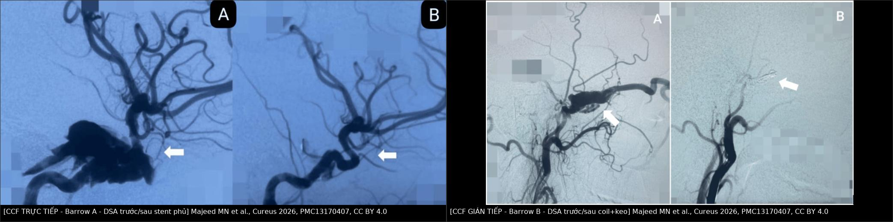
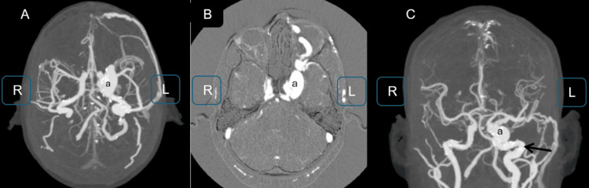
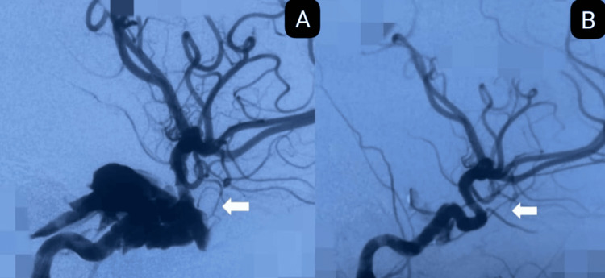
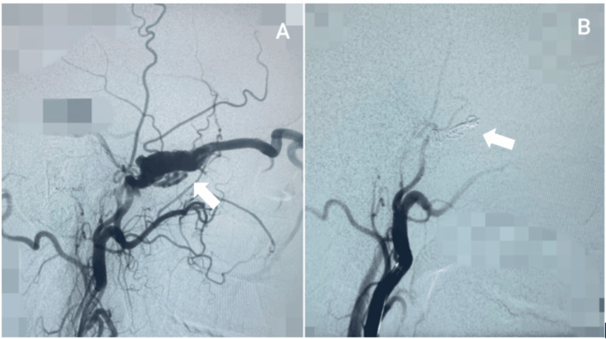

249 — Rò động mạch cảnh–xoang hang sau chấn thương: Barrow A–D & can thiệp nội mạch / Post-traumatic carotid-cavernous fistula (CCF)
Tags: pattern:luong-thong-dong-tinh-mach pattern:mat-do-loi-mat vung:xoang-hang vung:o-mat score:Barrow protocol:DSA protocol:CTA-co
Mức chắc chắn (certainty): tổng hợp y văn (literature synthesis) — số liệu lấy từ toàn văn các bài mở (PMC13170407, PMC12949683, PMC10200966, PMC11544482, PMC12643439, PMC4488263); 3 ca trong quiz là ca nguyên văn, giữ đúng tuổi – cơ chế chấn thương – mô tả hình ảnh gốc.
Câu chốt: chấn thương sọ–mặt rồi mắt đỏ, lồi, có tiếng thổi = nghĩ CCF trực tiếp (Barrow A) cho tới khi chứng minh ngược; DSA 4 mạch là chuẩn vàng và là nơi quyết định can thiệp. Điều trị đầu tay là nội mạch (stent phủ/coil), không phải mổ hở. Chậm chẩn đoán = mất thị lực vĩnh viễn — ca 1 dưới đây bị điều trị như "viêm kết mạc nhiễm trùng" 2 tháng và mắt đã không còn nhận thức ánh sáng.
1. Tổng quan bệnh học – cơ chế hình ảnh
- Giải phẫu quyết định triệu chứng. Động mạch cảnh trong đoạn hang (C4) bị cố định giữa hai vòng màng cứng (proximal/distal dural ring) và uốn cong trong xoang hang (cavernous sinus) — một đám rối tĩnh mạch có vách. Trong xoang: dây VI là dây DUY NHẤT chạy trong lòng xoang; dây III, IV, V1, V2 nằm trong vách màng cứng bên. Vì vậy liệt dây VI là dấu hiệu sớm nhất và hay gặp nhất, còn liệt III–IV–V1–V2 xuất hiện khi xoang căng hoặc viêm lan vách.
- Cơ chế chấn thương. Lực tăng–giảm tốc đột ngột làm đoạn C4 cố định bị rách thành (trực tiếp do mảnh xương bướm, hoặc do biến dạng mạch) → máu áp lực ~100 mmHg đổ thẳng vào xoang áp lực ~5–10 mmHg. Vì gradient áp lực lớn, lỗ rò nhỏ cũng đủ tạo luồng thông lưu lượng cao (high-flow).
- TẠI SAO hình ảnh như vậy (vật lý):
- CTA: thuốc cản quang đến xoang hang ngay thì động mạch, trước khi các tĩnh mạch khác đổ đầy → gọi là "đổ đầy sớm" (early opacification). Xoang hang giãn, tĩnh mạch mắt trên (superior ophthalmic vein — SOV) giãn; trên CTA, SOV > 0,5 cm là ngưỡng gợi ý CCF thể trực tiếp (PMC11544482).
- Não/ổ mắt: áp lực tĩnh mạch tăng → lồi mắt, phù kết mạc, giãn mạch kết mạc, cơ vận nhãn dày lên do ứ máu (không phải do viêm cơ). Tăng áp lực tĩnh mạch → tăng nhãn áp → thiếu máu đầu dây thần kinh thị → mất thị lực kiểu thiếu máu, không hồi phục nếu muộn.
- Tiếng thổi (bruit): dòng xoáy trong SOV ngay sau ổ mắt — nghe bằng ống nghe, hoặc bệnh nhân tự nghe "ù tai mạch đập" (pulsatile tinnitus).
- Dịch tễ & ngưỡng: CCF gặp ở 0,2% ca chấn thương sọ não và tới 3,8% ca vỡ nền sọ (PMC12949683); ~75% CCF là do chấn thương, trong khi phân tích gộp 1.494 bệnh nhân ghi 87,17% do chấn thương, 10,18% tự phát (PMC10200966). CCF trực tiếp chiếm 70–90% tổng số CCF (PMC13170407).
- TẠI SAO chấn thương → thể trực tiếp, tự phát → thể gián tiếp: chấn thương rách thành động mạch cảnh (một lỗ lớn, lưu lượng cao); tự phát là rò màng cứng (dural AVF) qua các nhánh màng não nhỏ của động mạch cảnh trong/mạch cảnh ngoài — nhiều cuống nhỏ, lưu lượng thấp, thường ở nữ lớn tuổi.
2. Mẫu hình + chẩn đoán phân biệt theo vị trí và kiểu dẫn lưu (Gamut)
- Mẫu hình "mắt đỏ + lồi + thổi" (anterior drainage): CCF trực tiếp (Barrow A) → CCF gián tiếp (B–D) → huyết khối xoang hang → viêm mô tế bào ổ mắt → bệnh mắt tuyến giáp (TED) → dị dạng động–tĩnh mạch ổ mắt.
- Mẫu hình "liệt vận nhãn đơn độc, mắt KHÔNG đỏ" (posterior drainage): CCF dẫn lưu ra xoang đá dưới/tĩnh mạch cảnh trong → không có lồi mắt, không thổi; dễ nhầm Tolosa–Hunt, hội chứng khe ổ mắt trên, đau đầu cluster. Đây là nhóm bỏ sót nhiều nhất.
- Mẫu hình "chảy máu": dẫn lưu về vỏ não (cortical venous drainage) → xuất huyết nội sọ/chảy máu cam nặng. Trong 236 ca rò động–tĩnh mạch màng cứng, 23,7% xuất huyết lúc chẩn đoán và kiểu dẫn lưu tĩnh mạch là yếu tố nguy cơ độc lập duy nhất (PMC4488263).
- Phân loại Barrow (dùng cho mọi CCF):
- A — trực tiếp: động mạch cảnh trong ↔ xoang hang, lưu lượng cao, gần như luôn do chấn thương.
- B — gián tiếp: nhánh màng não của động mạch cảnh trong.
- C — gián tiếp: nhánh màng não của động mạch cảnh ngoài.
- D — gián tiếp: cả hai (động mạch cảnh trong + ngoài).
- Mnemonic "RED EYE" cho CCF: Ringing (ù tai mạch đập) · Exophthalmos · Dilated episcleral vessels · Elevated IOP · Yes bruit · Eye movement deficit.
- Bảng phân tầng nguy cơ theo dẫn lưu: trước (SOV) = nguy cơ mắt; sau (xoang đá) = nguy cơ liệt dây, ít dấu mắt; vỏ não = nguy cơ xuất huyết; xoang bướm = chảy máu cam ồ ạt.
3. Bảng so sánh phân biệt (ma trận đối chiếu)
| Thực thể (entity) | Hình ảnh điển hình (CTA/MRI/DSA) | Chốt vào (rule-in) | Chốt loại (rule-out) | Gợi ý xác nhận |
|---|---|---|---|---|
| CCF trực tiếp (Barrow A) | Xoang hang đổ đầy sớm, SOV > 5 mm, lỗ rò lớn từ C4; DSA thấy shunt thì động mạch | Chấn thương + lồi mắt + tiếng thổi + SOV giãn > 5 mm | Không có shunt trên DSA 4 mạch → không phải CCF | DSA 4 mạch + 3D; can thiệp nội mạch |
| CCF gián tiếp (Barrow B–D) | Nhiều cuống màng não nhỏ, lưu lượng thấp, xoang hang giãn vừa; CTA có thể âm tính | Tự phát + nữ lớn tuổi + đỏ mắt âm ỉ; DSA thấy cuống màng não | Một lỗ rò lớn từ C4 → thể trực tiếp | DSA (chuẩn vàng), ICGA/CTA lặp |
| Huyết khối xoang hang | Khuyết thuốc trong xoang trên CTA tĩnh mạch, thành xoang bắt thuốc, viêm xoang/mặt kèm | Sốt + nhiễm trùng mặt/xoang + liệt nhiều dây + lan 2 bên | Có shunt động–tĩnh mạch rõ → CCF | CTA tĩnh mạch, MRI, cấy máu; kháng sinh + kháng đông |
| Bệnh mắt tuyến giáp (TED) | Cơ to nhưng CHỪA GÂN, mỡ ổ mắt tăng, không giãn SOV | Bệnh tuyến giáp + cơ to chừa gân + 2 bên | SOV giãn > 5 mm + thổi → CCF | TSH/TRAb; MRI có T2 fat-sat |
| Viêm mô tế bào/áp-xe ổ mắt | Mỡ ổ mắt thâm nhiễm, áp-xe có vỏ, cơ dính cả gân, viêm xoang sàng | Sốt, đau tăng khi liếc, đề kháng ổ mắt | Thổi + đổ đầy sớm xoang → CCF | CTA/MRI; kháng sinh; không chọc nhầm CCF |
| Dị dạng động–tĩnh mạch ổ mắt | Khối mạch trong ổ mắt, nidus, không phải xoang hang | Nidus trong mô ổ mắt, thường trẻ | Shunt ở xoang hang → CCF | DSA chọn lọc |
| Tolosa–Hunt / viêm xoang hang | Xoang hang dày, bắt thuốc, không có shunt; MRI T2 giảm tín hiệu | Đau ổ mắt dữ dội + liệt nhiều dây + đáp ứng corticoid | Có shunt thì loại Tolosa–Hunt | MRI + DSA; thử corticoid |

Trái: CCF trực tiếp (Barrow A) — (A) thuốc đổ đầy xoang hang ngay thì động mạch, (B) sau đặt stent phủ: lỗ rò kín, động mạch cảnh trong thông. Phải: CCF gián tiếp (Barrow B) — (A) cuống màng não từ động mạch cảnh ngoài đổ vào xoang, (B) sau coil + keo: không còn dòng vào rò. Nguồn: Majeed MN et al., Cureus 2026 (PMC13170407), Fig. 3–4, CC BY 4.0. Ảnh ghép letterbox, giữ nguyên tỷ lệ.Ba dấu hiệu chốt cần đọc đúng
- Đổ đầy sớm xoang hang: trên CTA, xoang hang sáng bằng động mạch cảnh ở thì động mạch — bình thường xoang chỉ sáng ở thì tĩnh mạch.
- SOV > 5 mm: ngưỡng trên CTA; trong 35 ca CCF, đường kính SOV trái > 0,5 cm tương quan với thể trực tiếp, còn SOV phải và tĩnh mạch cảnh trong hai bên không tương quan với kiểu/vị trí rò (PMC11544482).
- Lệch 1 bên nhưng triệu chứng 2 bên: dẫn lưu qua xoang gian hang sang bên đối diện → mắt bên kia cũng đỏ/lồi; không vì "2 bên" mà loại CCF.
4. Protocol chụp + phân độ + can thiệp
4.1. Chẩn đoán
- CTA sọ–ổ mắt lát ≤ 1 mm, có cản quang, dựng 3D MIP (thì động mạch + thì tĩnh mạch): bước đầu, nhanh, phát hiện xoang hang giãn, SOV > 5 mm, cơ vận nhãn dày, vỡ xương bướm.
- MRI/MRA: hữu ích khi chống chỉ định cản quang hoặc cần đánh giá mô mềm; nhưng CTA/MRI có thể ÂM TÍNH ở rò gián tiếp lưu lượng thấp — ca báo cáo có CTA và MRI trước đó không phát hiện bất thường, chỉ DSA chẩn đoán (PMC13256690).
- DSA 4 mạch (động mạch cảnh trong–ngoài + đốt sống hai bên) là chuẩn vàng: xác định vị trí lỗ rò, Barrow, cuống nuôi, kiểu dẫn lưu tĩnh mạch, tuần hoàn bàng hệ, và chụp đối bên + nghiệm pháp nén (Allcock) để đánh giá dòng bàng hệ trước khi cân nhắc bít mẹ.
- Không chọc/hút ổ mắt khi chưa loại CCF — có thể gây chảy máu không cầm.
- Trước can thiệp: chức năng thận, đông máu, bóng test tắc mạch (balloon test occlusion) nếu định hy sinh động mạch cảnh trong.
4.2. Phân tầng và điều trị
- Chỉ định can thiệp: (1) giảm/mất thị lực, tăng nhãn áp; (2) dẫn lưu vỏ não hoặc chảy máu nội sọ/chảy máu cam; (3) liệt vận nhãn tiến triển; (4) đau đầu không kiểm soát; (5) rò tồn tại có triệu chứng.
- Có thể theo dõi: rò gián tiếp nhẹ, không dẫn lưu vỏ não, không đe dọa thị lực — có ca tự đóng hoàn toàn sau ~2 tháng (thể D hai bên, PMC13256690); chụp lại theo lịch.
- Trực tiếp (A) → đường động mạch: stent phủ (covered stent) là lựa chọn ưu tiên khi động mạch thẳng, đủ đường kính; coil ± bóng khi cổ rộng/không đặt được stent; chất lỏng (Onyx/n-BCA) hỗ trợ. Trong series 10 ca, 70% đặt stent phủ PK Papyrus, 20% thắt động mạch cảnh trong, 90% cải thiện lâm sàng, không có chảy máu/nhồi máu/liệt dây mới (PMC13170407).
- Gián tiếp (B–D) → đường tĩnh mạch: xoang đá dưới (inferior petrosal sinus) là đường vào phổ biến; coil ± chất lỏng; đường động mạch khó vì cuống nhỏ, nguy cơ thiếu máu dây thần kinh.
- Hy sinh động mạch cảnh trong (ICA ligation/triệt mạch): chỉ khi bàng hệ đủ (test tắc mạch âm tính) và không còn cách giữ mẹ; nguy cơ nhồi máu bán cầu.
- Tỷ lệ thành công: đóng kín ngay 68–75%, lui bệnh hoàn toàn 82–90%; liệt dây thần kinh sọ sau can thiệp 5–7% (PMC10200966, 36 nghiên cứu, 1.494 bệnh nhân). Tái phát được báo 35% (95% CI 5–66%; I² ≈ 99,8%) — độ không đồng nhất cực cao, không dùng con số này để tư vấn từng bệnh nhân, nhưng đủ để thấy bắt buộc chụp kiểm tra.
- Kháng kết tập: sau stent phủ dùng kháng kết tập kép; series trên dùng bolus tirofiban 4 mL + nạp clopidogrel 300 mg sau thủ thuật nếu chưa nạp trước, và chụp kiểm tra (DSA/CTA/MRI) ở tháng thứ 3 (PMC13170407). Thời gian DAPT cụ thể tùy trung tâm/loại stent — ghi rõ trong hồ sơ, không tự ngừng.
- Biến chứng cần cảnh báo:
- Xuất huyết nội sọ MUỘN sau khi đã đóng rò: ca 48 tuổi chảy máu thùy trán 12 ngày sau đóng CCF thành công, cơ chế "bùng nổ áp lực tưới máu bình thường" (normal perfusion pressure breakthrough — NPPB) trên vùng não trước đó giảm tưới máu (PMC12643439). Vì vậy theo dõi huyết áp và thần kinh sau thủ thuật, không chỉ 48 giờ đầu.
- Tắc stent/huyết khối, di lệch coil, liệt dây mới do khối choán chỗ, nhồi máu khi hy sinh mạch.
flowchart TD
A[Chấn thương sọ mặt rồi mắt đỏ lồi một bên] --> B[CTA 1 mm có cản quang và dựng 3D]
B --> C{Xoang hang đổ đầy sớm và SOV trên 5 mm}
C -->|Có| D[DSA 4 mạch xác nhận và phân loại Barrow]
C -->|Không nhưng lâm sàng mạnh| D
D --> E{Kiểu Barrow}
E -->|A trực tiếp| F[Can thiệp đường động mạch]
F --> F1[Stent phủ hoặc coil giữ mẹ]
E -->|B C D gián tiếp| G{Có dẫn lưu vỏ não hoặc đe dọa thị lực}
G -->|Có| H[Can thiệp đường tĩnh mạch qua xoang đá dưới]
G -->|Không| I[Theo dõi và chụp lại theo lịch]
F1 --> J[Kháng kết tập kép và chụp lại sau 3 tháng]
H --> J
I --> K[Tái khám mắt và DSA nếu xấu đi]
5. Biến thể bình thường và cạm bẫy
- "Viêm kết mạc" kéo dài một bên sau chấn thương = CCF cho tới khi loại trừ. Ca 1 bị điều trị kháng sinh 2 tháng trước khi chụp mạch; hậu quả mất thị lực vĩnh viễn. Bất kỳ đỏ mắt một bên + lồi + không đáp ứng điều trị đều phải nghe tiếng thổi và chụp mạch.
- CTA âm tính không loại trừ rò gián tiếp lưu lượng thấp — chỉ DSA âm tính mới loại trừ khi lâm sàng mạnh.
- Dẫn lưu sau (xoang đá) làm mất dấu mắt: bệnh nhân chỉ liệt dây VI/III, không đỏ mắt, không thổi → dễ chẩn đoán nhầm đau đầu cluster/Tolosa–Hunt và cho corticoid.
- Tổn thương do chấn thương có thể phối hợp: vừa giả phình C4 vừa rò — phải mô tả cả hai, vì giả phình quyết định cách dựng lại mạch (bài 248).
- Dị vật kim loại cản MRI: ca 1 có mảnh kim loại vùng trán → MRI chống chỉ định, phải dùng CTA (PMC12949683).
- Bilateral không loại trừ một ổ rò: dẫn lưu qua xoang gian hang; đừng kết luận "bệnh 2 bên" rồi bỏ DSA.
- Tăng nhãn áp sau khi đóng rò vẫn có thể tồn tại — rò đóng không đồng nghĩa thị lực hồi phục; thời gian thiếu máu thần kinh thị quyết định tiên lượng.
- Xuất huyết muộn sau đóng rò (NPPB): đừng cho xuất viện quá sớm ở bệnh nhân tăng huyết áp, não giảm tưới máu mạn.
6. Tự lượng giác — Blind Quiz
Ca 1 — Nam 35 tuổi, vô gia cư, 2 tháng sau vết dao xuyên hốc mắt trái: lồi mắt tăng dần, đau, "mắt đông cứng", không còn nhận thức ánh sáng.

- Gợi ý: ban đầu được điều trị như nhiễm trùng hốc mắt; đồng tử giãn cố định, liệt hoàn toàn vận nhãn; có mảnh kim loại vùng trán.
- Câu hỏi: (1) Dấu hiệu chính trên CTA? (2) Vì sao mắt "đông cứng" và mất thị lực? (3) Ba chẩn đoán phân biệt và bước tiếp theo?
Bấm để hiện đáp án (findings + chẩn đoán)
- Findings: (A, B) lát trục và (C) MIP coronal: xoang hang trái giãn, đổ đầy sớm và thông trực tiếp với động mạch cảnh trong đoạn hang (mũi tên); tĩnh mạch mắt trên giãn, cơ vận nhãn dày, thay đổi viêm mô mềm quanh ổ mắt.
- Chẩn đoán: CCF trực tiếp (Barrow A) sau chấn thương xuyên thấu hốc mắt, lưu lượng cao, dẫn lưu chủ yếu ra tĩnh mạch mắt trên.
- Vì sao "đông cứng": tăng áp lực xoang hang chèn ép VI (trong lòng xoang) + III, IV, V1 (vách bên) → liệt hoàn toàn vận nhãn; tăng áp lực tĩnh mạch → tăng nhãn áp → thiếu máu thần kinh thị gây mất thị lực không hồi phục sau 2 tháng.
- Phân biệt: huyết khối xoang hang (sốt, nhiễm trùng, lan 2 bên), viêm mô tế bào/áp-xe ổ mắt (sốt, đau khi liếc, không thổi), TED (cơ to chừa gân, 2 bên, không thổi).
- Bước tiếp theo: DSA 4 mạch (chuẩn vàng) rồi can thiệp nội mạch; MRI chống chỉ định vì có dị vật kim loại.
- Diễn biến nguồn: đặt 11 coil, đóng được ~80% lỗ rò; lồi mắt giảm nhưng thị lực không hồi phục và liệt vận nhãn giữ nguyên — minh họa giá của chẩn đoán muộn.
- Nguồn ảnh: Gómez Cristancho DC et al., Cureus 2026 (PMC12949683), Fig. 2, CC BY 4.0. Ca nguyên văn: nam 35 tuổi.
Ca 2 — Nữ 30 tuổi, lồi mắt trái, đỏ mắt, tiếng thổi sau ổ mắt; DSA xác nhận một lỗ rò lớn từ đoạn hang của động mạch cảnh trong.

- Gợi ý: Barrow A; động mạch cảnh trong còn dòng chảy não bình thường; chọn dụng cụ "một thì".
- Câu hỏi: (1) Mô tả (A) và (B)? (2) Vì sao chọn stent phủ thay vì coil? (3) Theo dõi sau thủ thuật gồm gì?
Bấm để hiện đáp án (findings + chẩn đoán)
- Findings: (A) DSA trước: thuốc từ đoạn hang động mạch cảnh trong đổ thẳng vào xoang hang giãn lớn (mũi tên) — rò trực tiếp lưu lượng cao. (B) sau stent phủ: không còn thuốc vào xoang, động mạch cảnh trong và các nhánh não phía trên vẫn thông.
- Chẩn đoán: CCF trực tiếp (Barrow A), đóng hoàn toàn bằng stent phủ.
- Vì sao stent phủ: bịt lỗ rò một thì mà vẫn giữ mẹ (giữ dòng não), tránh nguy cơ coil trôi/tắc nhánh; coil phù hợp hơn khi cổ rộng, mạch gấp khúc hoặc stent không áp được thành.
- Theo dõi: kháng kết tập kép theo phác đồ, DSA/CTA kiểm tra tháng thứ 3 (series dùng mốc này), khám mắt (lồi, thị lực, nhãn áp), theo dõi huyết áp và dấu thần kinh muộn (NPPB).
- Nguồn ảnh: Majeed MN et al., Cureus 2026 (PMC13170407), Fig. 4, CC BY 4.0. Ca nguyên văn: nữ 30 tuổi.
Ca 3 — Nam 30 tuổi, đỏ mắt trái âm ỉ nhiều tuần, không chấn thương; DSA thấy cuống màng não từ động mạch cảnh ngoài đổ vào xoang hang.

- Gợi ý: lưu lượng thấp, nhiều cuống nhỏ; không có lỗ rò trực tiếp từ C4.
- Câu hỏi: (1) Đây là Barrow nào? (2) Vì sao không dùng stent phủ như ca 2? (3) Khi nào có thể chỉ theo dõi?
Bấm để hiện đáp án (findings + chẩn đoán)
- Findings: (A) DSA động mạch cảnh ngoài: nhánh màng não đổ vào xoang hang (mũi tên) — không có thông trực tiếp từ động mạch cảnh trong. (B) sau coil + keo (glue): bít cuống, không còn dòng vào xoang.
- Chẩn đoán: CCF gián tiếp, lưu lượng thấp, bít được bằng coil + keo.
- Phản biện nguồn (giữ nguyên chú thích gốc): bài gốc ghi "Type B" nhưng chú thích ảnh lại mô tả nhánh màng não của động mạch cảnh NGOÀI — theo định nghĩa Barrow, cuống từ động mạch cảnh ngoài là type C, còn type B là cuống màng não của động mạch cảnh trong. Điểm cốt lõi không đổi: thể gián tiếp, nhiều cuống nhỏ, không có lỗ rò trực tiếp từ C4; khi trích dẫn phải ghi cả hai thông tin này, không tự "sửa" nguồn.
- Vì sao không stent phủ: không có một lỗ rò lớn trên thân động mạch cảnh trong để "vá"; tổn thương là nhiều cuống nhỏ → bít chọn lọc bằng coil/keo (thường qua đường tĩnh mạch) hợp lý hơn và tránh phủ nhánh lành.
- Khi nào theo dõi: rò gián tiếp nhẹ, không dẫn lưu vỏ não, thị lực ổn định — có ca tự đóng sau ~2 tháng (PMC13256690); nhưng nếu liệt dây tiến triển, đau không kiểm soát, dẫn lưu vỏ não hoặc thị lực giảm thì can thiệp.
- Nguồn ảnh: Majeed MN et al., Cureus 2026 (PMC13170407), Fig. 3, CC BY 4.0. Ca nguyên văn: nam 30 tuổi.
Bài liên quan chéo
- 423 – Fistula xoang hang vs huyết khối (góc nhìn mắt: phân biệt CCF với huyết khối xoang hang)
- 248 – Can thiệp nội mạch giả phình & bóc tách động mạch cổ (stent/coil, kháng kết tập)
- 247 – Bóc tách động mạch cổ/đốt sống
- 231 – Tổn thương mạch máu não do chấn thương & vỡ sọ tiến triển
- 227 – Đau đầu sét đánh: SAH/RCVS/bóc tách
- 216 – Dị dạng mạch máu não & huyết khối xoang
- 200 – Tổng quan hệ Thần kinh
Không dùng để chẩn đoán độc lập khi chưa có người hướng dẫn.